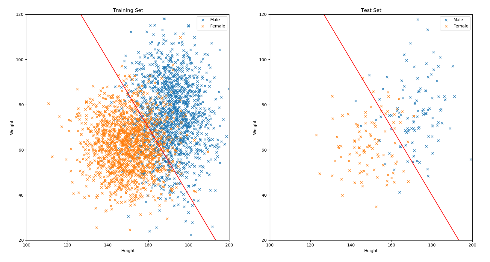
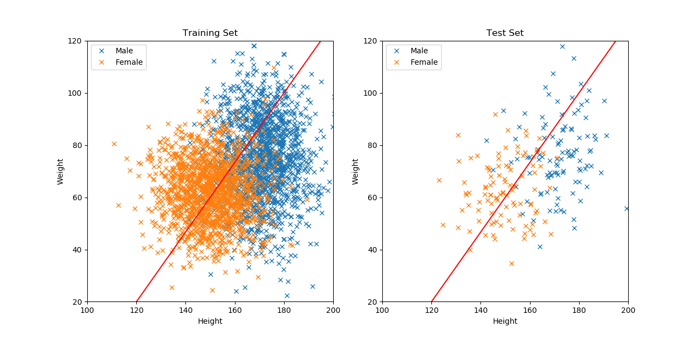

我們在學校的學習，大致上會需要買（或找）書、讀書、考試以及看成績，機器學習的概念也與之非常相似，但我們會稱之為收集資料、訓練模型、測試模型和效果評估，並且為了將資料轉換成機器方便運算的格式，通常還會在收集資料與訓練模型之間，加上一個叫做特徵抽取的步驟。以下將大略的介紹從收集資料到效果評估的相關概念，更多細節會在後面的應用章節提及。
我們以「使用身高體重分辨生理性別」作為一個範例的研究題目來說明。為了這個題目，你首先可能需要找一堆人，然後測量他們的身高體重以及紀錄性別，這就是收集資料以及特徵抽取(feature extraction)。而如果已經有人公開提供資料，例如這裡，你也可以在符合授權條款的情況下，用這些資料來做實驗。需要注意的是，特徵抽取並不是隨便亂抽就可以，例如：
- 兩性平均的體脂率不一樣，因此體脂率可能是個有幫助的特徵
- 手臂長度跟身高很相關，但由於我們已經有身高當作特徵了，所以手臂長度的幫助可能沒那麼大
- 性聯遺傳疾病中，雖然不同疾病在不同性別的發病率可能有明顯的不同，但是若你的資料中剛好相關個案的數量非常少，則對整體模型效果的幫助通常也不大
- 至於像是鼻孔有幾個或是腿有幾條，這種除非遭遇疾病或意外否則不會有差異的值，就幾乎不太可能有幫助
接著，我們會把資料分成三個子集，分別為訓練集(training set)，驗證集(validation set) ，以及測試集(test set)，分別做為訓練、驗證，以及測試用；其中，驗證集又稱開發集(development set)，而在初步實驗等狀況下，也有可能不特別切出驗證集。三份資料集的說明如下：
- 訓練的概念相當於你平時的讀書學習，也就是使用一堆你知道答案的資料來學出模型；通常來說，模型架構選用的愈複雜，或者學習的時間愈久，則模型在這部分會學得愈好。
- 驗證的意思則相當於模擬考，讓你有機會在發現考得不夠好的時候，回頭調整模型的訓練。
- 測試則是當作讀完書後上去真正的考場，也就是把從測試集抽取出的特徵輸入進訓練好的模型，再把模型的輸出跟答案來比對分數。
下面的圖片，是使用前述的公開資料集收集的特徵，以及切分好的訓練集和測試集進行繪製。圖片上的線是依據訓練資料，用人工隨便切一刀的線性分類器 y = -1.5 * x + 310，並期望女性資料位在線的左邊，男性資料位在線的右邊，如果你看到有相反的狀況，就代表你發現了這個分類器的分類錯誤：

另外，上述範例的問題，因為是分辨不同的種類，所以稱為分類問題；而如果你希望預測的目標是連續的數字，例如從身高預測體重，則稱為回歸問題。下圖是依據訓練資料，用人工隨意畫出一條回歸線 y = 4 / 3 * x - 140，並期望所有資料點都盡可能地靠近這條線；而資料點與線之間的距離，就是回歸的誤差：

當你基於訓練資料完成了一個模型（前述範例都是人工切的，後面才會介紹如何讓機器去學）以後，就需要進行效果評估，也就是對它在測試集上的效果打分數。以分類問題來說，單純去計算答對的比率是最常見的評估方式，稱為準確度(accuracy)；就前述範例的分類部分來說，訓練集和測試集的準確度分別是 85.1333% 以及 85.8537%。而對於回歸問題，可以用 mean absolute error (MAE)或 mean square error (MSE) 來評量，也就是把每筆資料的答案，跟預測結果計算差距的絕對值或平方，再平均起來即可。就前述範例的回歸部分來說，訓練集和測試集的 MAE 分別是 19.1502 kg 以及 16.4234 kg。
下面的程式是讀取資料的範例，請各位試著自己接著完成畫圖與效果評估的部分：
import numpy as np def read_file(path): with open(path, 'r') as fin: cnt = fin.read().splitlines()[1:] male_all = [] female_all = [] for line in cnt: arr = line.split(',') if arr[-1] == 'Male': male_all.append([float(arr[0]), float(arr[1])]) else: female_all.append([float(arr[0]), float(arr[1])]) return np.array(male_all), np.array(female_all) def f_cla(x): return -1.5 * x + 310 def f_reg(x): return 4 / 3 * x - 140 male_tr, female_tr = read_file('Training set.csv') male_te, female_te = read_file('Test set.csv')